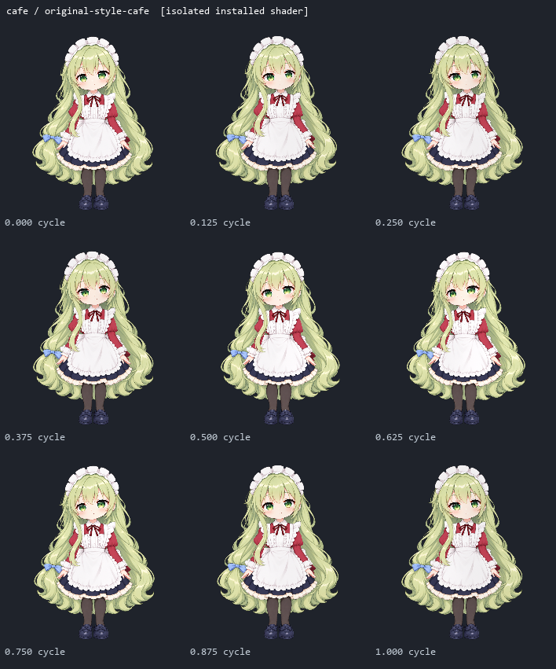
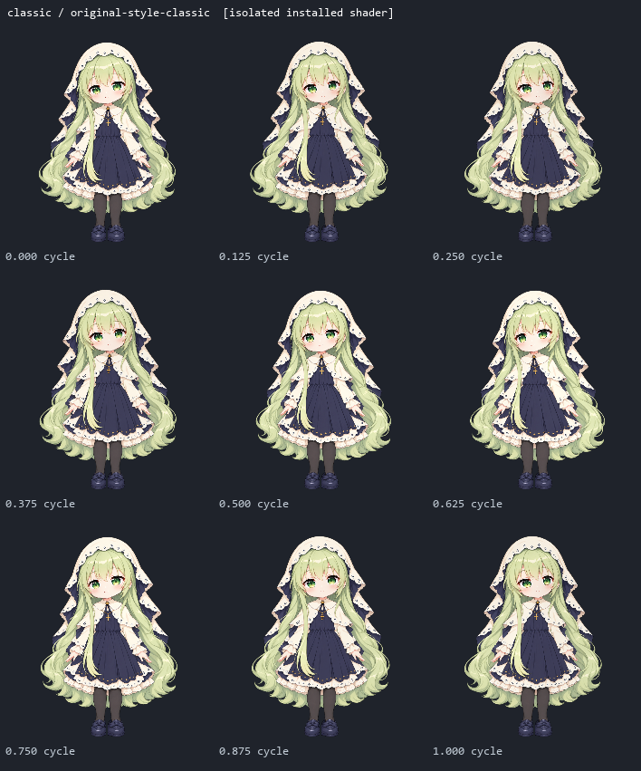
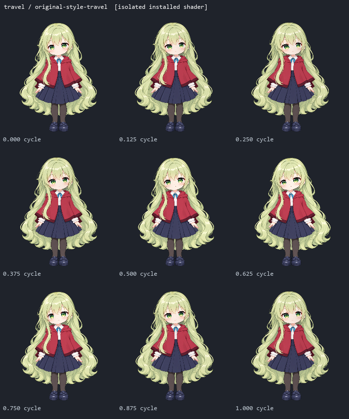

用户指定现有女仆装桌宠的画风。当前直接使用原安装包素材副本，保留原来的脸型、比例、配色、线条、发丝和衣服细节；上一批改画风的待机与OP原画已停用。
后续制作的固定约束 · 原稿来源与完整性
下片为独立GPU渲染导出，24fps，用于查看原画风格和小幅深度/跟随，不能作为原生录屏或120fps验收证据。



试验结束后恢复正式版本和用户状态；这是原画渲染路径验证，尚未完成完整新待机和OP。